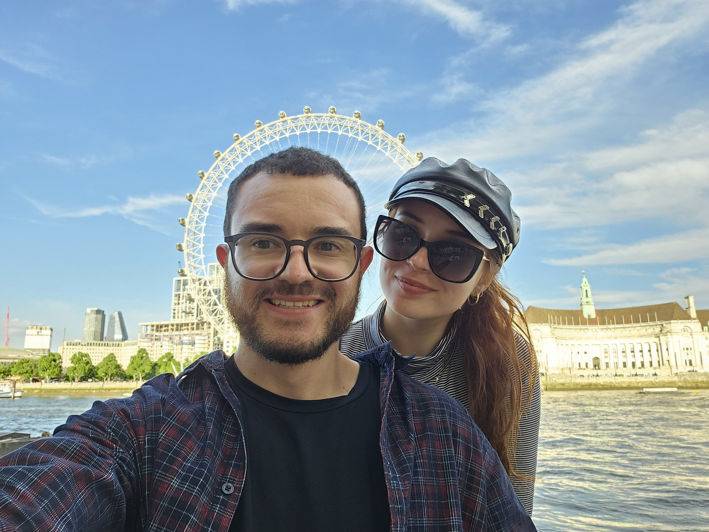

Tocando agora
Faltam
00
dias
00
horas
00
min
00
seg
Nossa história
Um novo capítulo
Quem diria que aquele encontro despretensioso em 2021 nos traria até aqui? Entre tantas risadas, viagens e planos, percebemos que o nosso "para sempre" já tinha começado. O pedido de casamento veio para selar o que o coração já sabia. Agora, contamos os dias, as horas e os segundos para celebrar o nosso amor junto das pessoas mais queridas
Momentos